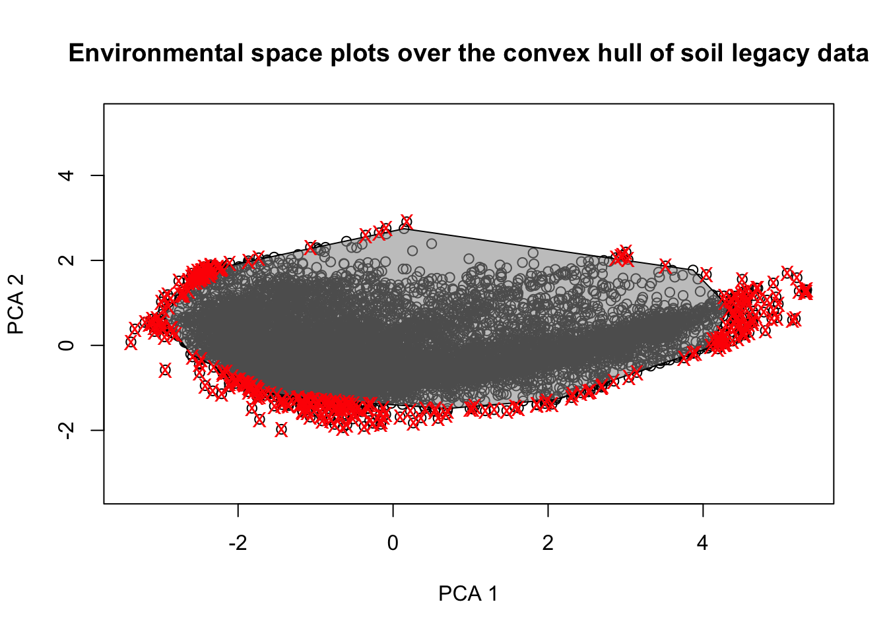

Chapter 2 Evaluating Soil Legacy Data Sampling for DSM
Modelling techniques in Digital Soil Mapping involve the use of sampling point soil data, with its associated soil properties database, and a number of environmental covariates that will be used to ascertain the relationships of soil properties and the environment to then generalize the findings to locations where no samples have been compiled.
In soil sampling design, a crucial issue is to determine both the locations and the number of the samples to be compiled. In an optimal situation, soil sample database should adequately cover all the environmental diversity space in the study area with a frequency relative to the extent of the diversity in the environmental covariates.
When dealing with legacy soil data, a question that arises is if the data is representative of the environmental diversity within the study area. In this Chapter we present a method to answer this question and to build an alternative how many samples can be retrieved to cover the same environmental space as the existing soil data. The method follows the main findings in (Malone, Minansy, and Brungard 2019) and developed as R scripts.
We adapted the original scripts to make use of vector shp and raster tif files, as these are data formats commonly used by GIS analysts and in which both soil and environmental data is often stored. We also made some changes in order to simplify the number of R packages and to avoid the use of deprecated packages as it appears in the original code.
2.1 Data Preparation
We must first load the required packages and data for the analyses. We make use of the packages sp and terra to manipulate spatial data, clhs for Conditioned Latin Hypercube Sampling, entropy to compute Kullback-Leibler (KL) divergence indexes, tripack for Delaunay triangulation and manipulate for interactive plotting within RStudio. Ensure that all these packages are installed in your system before the execution of the script.
In this manual we recommend to use a common structure for the project, where R scripts appear in the root of the working directory and data files are in a data/ directory within the root directory (shp and tif files should be within the sub folders data/shapes and data/rasters respectively. Following this recommendation simplifies the definition of paths and execution of the scripts. If users want to change their storage paths they have to be properly adjusted in the script.
We define the working directory to the directory in which the actual file is located and load the soil legacy sampling points and the environmental rasters from the data folder. To avoid the definition of each environmental covariate, we first retrieve all files with the .tif extension and then create a SpatRaster object with all of them in a row.
# Set working directory to source file location
setwd(dirname(rstudioapi::getActiveDocumentContext()$path))## Load soil legacy point data
p.dat <- terra::vect("data/shapes/legacy_soils.shp")
## Load raster covariate data----
# Read Spatial data covariates as rasters with terra
rasters <- "data/rasters"
cov.dat <- list.files(rasters, pattern = "tif$", recursive = TRUE, full.names = TRUE)
cov.dat <- terra::rast(cov.dat) plot(cov.dat)
(#fig:plot_covdata)Plot of the covariates
2.2 Representativeness of the Legacy Soil Data
The next step involves the determination of the distributions of environmental values in the soil samples data and its comparison with the existing distributions of each environmental variable to determine the representativeness of the soil points in the environmental space.
The comparison of distributions is performed through the Kullback-Leibler divergence (KL). It is a measure used to quantify the difference between two probability distributions. KL-divergence compares an “objective” or reference probability distribution (here, the distribution of covariates in the complete covariate space - P) with a “model” or approximate probability distribution (the space of covariates in the soil samples - Q). The main idea is to determine how much information is lost when Q is used to approximate P. In other words, KL-divergence measures how much the Q distribution deviates from the P distribution.
We cross soil and environmental data to create a dataset with the values of the environmental parameters at the locations of the soil samples.
# Extract environmental data from rasters at soil locations ----
p.dat_I <- terra::extract(cov.dat, p.dat)
p.dat_I <- na.omit(p.dat_I) # Remove soil points outside study area
str(p.dat_I)## 'data.frame': 238 obs. of 5 variables:
## $ ID : num 1 2 3 4 5 6 7 8 9 10 ...
## $ ECd : num 7.48 5.86 7.4 6.84 6.2 ...
## $ ECs : num 7.86 5.67 7.81 6.99 5.51 ...
## $ elevation: num 127 127 127 127 127 ...
## $ yield : num 3.03 3.79 3.37 2.62 3.69 ...We first calculate a n-matrix with the values of the covariates dividing their distributions into n equally-spaced bins. Each bin captures the environmental variability within its interval in the total distribution. In this exercise, n equals to 25. The result is a 26×4 matrix, where the rows represent the upper and lower limit of the bin and (thus, 26 rows are required to represent 25 bins), and 4 correspond to the number of variables used as environmental proxies.
# Define Number of bins
nb<- 25
#quantile matrix (of the covariate data)
q.mat<- matrix(NA, nrow=(nb+1), ncol= nlyr(cov.dat))
j=1
for (i in 1:nlyr(cov.dat)){ #note the index start here
#get a quantile matrix together of the covariates
ran1 <- minmax(cov.dat[[i]])[2] - minmax(cov.dat[[i]])[1]
step1<- ran1/nb
q.mat[,j]<- seq(minmax(cov.dat[[i]])[1], to = minmax(cov.dat[[i]])[2], by =step1)
j<- j+1}From this matrix, we compute the hypercube matrix of covariates in the whole covariate space.
# Hypercube of "objective" distribution (P) - covariates
cov.dat.df <- as.data.frame(cov.dat) # convert SpatRaster to dataframe
cov.mat<- matrix(1, nrow=nb, ncol=ncol(q.mat))
for (i in 1:nrow(cov.dat.df)){ # the number of pixels
cntj<- 1
for (j in 1:ncol(cov.dat.df)){ #for each column
dd<- cov.dat.df[i,j]
for (k in 1:nb){ #for each quantile
kl<- q.mat[k, cntj]
ku<- q.mat[k+1, cntj]
if (is.na(dd)) {
print('Missing')
}
else if (dd >= kl & dd <= ku){cov.mat[k, cntj]<- cov.mat[k, cntj] + 1}
}
cntj<- cntj+1
}
}We then calculate the hypercube matrix of covariates in the sample space.
# Sample data hypercube
h.mat<- matrix(1, nrow=nb, ncol=ncol(q.mat))
for (ii in 1:nrow(p.dat_I)){ # the number of observations
cntj<- 1
for (jj in 2:ncol(p.dat_I)){ #for each column
dd<- p.dat_I[ii,jj]
for (kk in 1:nb){ #for each bin
kl<- q.mat[kk, cntj]
ku<- q.mat[kk+1, cntj]
if (dd >= kl & dd <= ku){h.mat[kk, cntj]<- h.mat[kk, cntj] + 1}
}
cntj<- cntj+1
}
}- KL-divergence
We calculate the KL-divergence to measure how much the distribution of covariates in tbe sample space (Q) deviates from the distribution of covariates in the complete study area space (P).
## Compare covariate distributions in P and Q with Kullback-Leibler (KL) divergence
kl.index <-c()
for(i in 1:ncol(cov.dat.df)){
kl <- KL.empirical(c(cov.mat[,i]), c(h.mat[,i]))
kl.index <- c(kl.index,kl)
klo <- mean(kl.index)
}
print(kl.index) # KL divergences of each covariate## [1] 0.04115895 0.04241792 0.02779852 0.04328375 print(klo) # KL divergence in the existing soil samples## [1] 0.03866478The KL-divergence is always greater than or equal to zero, and reaches its minimum value (zero) only when P and Q are identical. Thus, lower values of KL-divergence are indicative of a good match between both the sample and the study area spaces, indicating that the sample space is a fair representation of the environmental conditions in the study area.
In this case, the KL-divergence value is 0.039, indicating that the legacy samples capture most of the environmental variability in the study area.
- Percent of representativeness in relation to the overall environmental conditions
Finally, we can also determine the degree in which our legacy soil dataset is representative of the existing environmental conditions in the study area. For that, we calculate the proportion of pixels in the study area that would fall within the convex hull polygon delineated upon the environmental conditions found at the soil legacy data locations only. The convex hull polygon is created upon a Principal Component transformation of the covariate data in the soil legacy data and using the outter limits of the scores of the points projected on the two main Components.
#### Representativeness of the Legacy Dataset: ----
## Calculate the proportion of "env. variables" in the covariate spectra that fall within the convex hull of variables in the "environmental sample space"
# Principal component of the legacy data sample
pca.s = prcomp(p.dat_I[,2:(ncol(cov.dat.df)+1)],scale=TRUE, center=TRUE)
scores_pca1 = as.data.frame(pca.s$x)
# Plot the first 2 principal components and convex hull
rand.tr <- tri.mesh(scores_pca1[,1],scores_pca1[,2],"remove") # Delaunay triangulation
rand.ch<-convex.hull(rand.tr, plot.it=F) # convex hull
pr_poly = cbind(x=c(rand.ch$x),y=c(rand.ch$y)) # save the convex hull vertices
plot(scores_pca1[,1], scores_pca1[,2], xlab="PCA 1", ylab="PCA 2", xlim=c(min(scores_pca1[,1:2]), max(scores_pca1[,1:2])),ylim=c(min(scores_pca1[,1:2]), max(scores_pca1[,1:2])), main='Convex hull of soil legacy data')
lines(c(rand.ch$x,rand.ch$x[1]), c(rand.ch$y,rand.ch$y[1]),col="red",lwd=1) # draw the convex hull (domain of legacy data)
# PCA projection of study area population onto the principal components
PCA_projection<- predict(pca.s, cov.dat.df) # Project study area population onto sample PC
newScores = cbind(x=PCA_projection[,1],y=PCA_projection[,2]) # PC scores of projected population
# Plot the polygon and all points to be checked
plot(newScores, xlab="PCA 1", ylab="PCA 2", xlim=c(min(newScores[,1:2]), max(newScores[,1:2])), ylim=c(min(newScores[,1:2]), max(newScores[,1:2])), col='black', main='Environmental space plots over the convex hull of soil legacy data')
polygon(pr_poly,col='#99999990')
# Check which points fall within the polygon
pip <- point.in.polygon(newScores[,2], newScores[,1], pr_poly[,2],pr_poly[,1],mode.checked=FALSE)
newScores <- data.frame(cbind(newScores, pip))
# Plot points outside convex hull
points(newScores[which(newScores$pip==0),1:2],pch='X', col='red')
# Proportion of the conditions in the study area that fall within the convex hull
sum(newScores$pip)/nrow(newScores)*100 ## [1] 96.50188This indicates that 96.5% of the existing conditions in the study area fall within the convex hull delineated with the data in the soil samples, showing the adecquacy of the proposed legacy data for DSM.